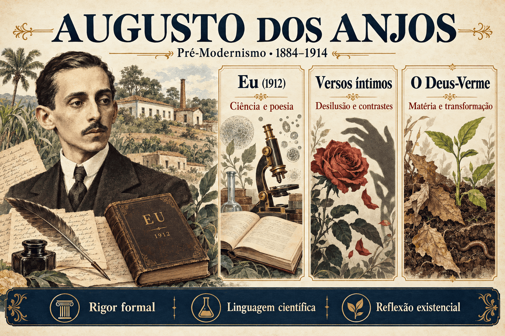

Augusto dos Anjos: biografia, Eu, características e análise de poemas
Augusto dos Anjos é um dos poetas mais singulares da literatura brasileira. Em seus versos, palavras associadas à química, à biologia e à decomposição convivem com formas tradicionais, imagens simbólicas e inquietações filosóficas. O resultado é uma poesia que interroga a existência humana a partir da fragilidade do corpo, da dor e da transformação da matéria.
Seu único livro publicado em vida, Eu (1912), reúne uma produção que resiste a classificações rígidas. Estudado no Pré-Modernismo, o autor dialoga com o Parnasianismo, o Simbolismo e o pensamento científico de seu tempo, sem se limitar a nenhum desses referenciais.
Poemas como “Psicologia de um vencido”, “Versos íntimos”, “O Deus-Verme” e “O morcego” mostram como a elaboração formal transforma o desconforto em experiência estética. Mais do que procurar imagens chocantes, o leitor deve observar o que elas revelam sobre a condição humana.

Augusto dos Anjos em resumo
- Nome completo: Augusto de Carvalho Rodrigues dos Anjos.
- Nascimento: 20 de abril de 1884, no Engenho Pau d’Arco, Paraíba.
- Falecimento: 12 de novembro de 1914, em Leopoldina, Minas Gerais.
- Atuação: poeta e professor, formado em Direito.
- Classificação didática: Pré-Modernismo, com diálogo com diferentes tradições literárias.
- Livro publicado em vida: Eu (1912).
- Temas: morte, sofrimento, decomposição, consciência, desilusão e condição humana.
- Estilo: sonetos, musicalidade, vocabulário científico, contrastes e imagens grotescas.
Quem foi Augusto dos Anjos?
Augusto dos Anjos nasceu no Engenho Pau d’Arco, na Paraíba, em uma família ligada ao mundo rural. Sua formação inicial contou com a participação do pai, Alexandre Rodrigues dos Anjos, que o aproximou de leituras literárias e intelectuais. Posteriormente, estudou na Faculdade de Direito do Recife.
O ambiente intelectual do Recife favorecia o contato com debates filosóficos e científicos em circulação no final do século XIX e no início do XX. Esse repertório aparece reelaborado em sua poesia: termos especializados deixam de funcionar apenas como instrumentos de explicação e passam a produzir imagens, ritmo e inquietação.
Embora formado em Direito, Augusto dedicou-se ao ensino. Viveu na Paraíba, no Rio de Janeiro e, no fim da vida, em Leopoldina, Minas Gerais, onde atuou na direção de um grupo escolar. Morreu em 1914, aos trinta anos, dois anos depois da publicação de Eu.
Cuidado com a leitura biográfica: o sofrimento expresso nos poemas não permite diagnosticar o autor nem considerar cada verso um registro literal de sua vida. O eu lírico é uma voz construída no texto.
Contexto histórico e intelectual
A obra se desenvolve em um período de transformações econômicas e sociais, marcado pela Primeira República e pela convivência de tradições literárias diferentes. Ao mesmo tempo, teorias científicas e filosóficas ofereciam novas maneiras de pensar a vida, a matéria e o lugar do ser humano no universo.
- Prestígio da ciência: o vocabulário das ciências naturais circulava para além dos espaços especializados.
- Debates sobre evolução: a transformação dos seres e da matéria estimulava interpretações sobre a existência.
- Crise das certezas: progresso material e conhecimento científico não eliminavam a experiência da dor e da finitude.
- Diversidade estética: Parnasianismo, Simbolismo e outras tendências coexistiam no campo literário.
- Contradições sociais: miséria, exclusão e violência também atravessam a experiência humana representada nos poemas.
Esses referenciais não fazem de Eu um manual científico ou a exposição de uma doutrina única. A poesia se apropria de conceitos, desloca seus sentidos e coloca explicações materiais em tensão com angústias que elas não resolvem.
Augusto dos Anjos pertence a qual escola literária?
A classificação mais frequente nos estudos escolares é o Pré-Modernismo. Ela ajuda a situar historicamente a publicação de Eu, mas não descreve sozinha as particularidades de sua linguagem.
Augusto utiliza recursos associados a tradições distintas: conserva o trabalho métrico e as rimas, explora sugestões simbólicas e introduz termos e imagens que desafiam expectativas de beleza poética. Sua singularidade resulta da maneira como transforma esse repertório.
| Referência | Aproximação | Limite da classificação |
|---|---|---|
| Parnasianismo | Rigor de composição, rimas, sonetos e frequente uso de versos decassílabos. | A intensidade subjetiva e a matéria grotesca afastam sua poesia do ideal de impassibilidade. |
| Simbolismo | Musicalidade, símbolos, inquietação espiritual e percepção de mistério. | A presença insistente do corpo e do vocabulário científico impede reduzi-lo à sugestão espiritualista. |
| Cientificismo | Apropriação de palavras e ideias das ciências naturais e de debates filosóficos. | O poema não se limita a demonstrar uma teoria: transforma os conceitos em expressão estética. |
| Expressionismo | A crítica aproxima certas imagens de deformação, angústia e intensidade de uma sensibilidade expressionista. | Essa aproximação não comprova filiação direta ao movimento europeu. |
| Pré-Modernismo | Localização histórica e tensão com convenções culturais anteriores a 1922. | O período reúne projetos diversos, sem um programa estético único. |
Eu (1912): o livro e sua importância
Publicado no Rio de Janeiro em 1912, Eu foi o único livro que Augusto dos Anjos lançou em vida. A edição original apresenta um núcleo de 56 poemas. Depois da morte do poeta, sua produção foi reunida e ampliada em edições posteriores, frequentemente conhecidas pelo título Eu e outras poesias.
É importante distinguir o livro de 1912 das coletâneas ampliadas. Não se trata de dois livros independentes publicados pelo autor em vida. Ao analisar um poema, vale conferir a edição consultada e sua composição.
O título Eu não significa que os textos tratem apenas de experiências pessoais. A voz poética frequentemente parte do indivíduo para refletir sobre a espécie humana, a vida orgânica e processos que ultrapassam a consciência particular.
Ideia central: o “eu” que deseja compreender a si mesmo descobre que também é corpo, matéria e parte de um universo em transformação. Sua singularidade entra em tensão com a condição comum dos seres vivos.
Características da poesia de Augusto dos Anjos
- Vocabulário científico: palavras como carbono, amoníaco, bactéria e epigênese participam da construção das imagens.
- Consciência da finitude: o corpo aparece sujeito ao tempo, à doença e à decomposição.
- Pessimismo: a dor e a desilusão comprometem expectativas de harmonia e estabilidade.
- Grotesco: imagens de deterioração e estranhamento confrontam modelos convencionais de beleza.
- Rigor formal: ritmo, rima e organização estrófica sustentam a intensidade expressiva.
- Contrastes: ideal e matéria, afeto e agressão, vida e morte se aproximam de modo perturbador.
- Musicalidade: repetições sonoras, acentos e encadeamento dos versos contribuem para os efeitos de sentido.
- Amplitude da dor: o sofrimento individual pode se expandir em reflexão sobre outros seres e sobre a humanidade.
Ciência, decomposição e pessimismo cósmico
O vocabulário científico como linguagem poética
Em Augusto dos Anjos, uma palavra científica não aparece apenas para tornar o texto erudito. Ela pode alterar a maneira como o sujeito se representa: em vez de uma identidade idealizada, surge um organismo constituído de elementos materiais.
Também importa observar o som dessas palavras e sua posição no verso. A combinação entre termos especializados e recursos tradicionais produz estranhamento, mas não elimina o trabalho de composição.
A decomposição da matéria
O verme e a deterioração do corpo confrontam a ideia de permanência do indivíduo. A morte implica perda da forma pessoal e participação em processos materiais que continuam para além dela.
Essas imagens também podem questionar hierarquias: prestígio, riqueza e aparência não retiram ninguém da condição de corpo perecível. Essa possibilidade de leitura deve ser sustentada pelo poema específico, e não aplicada mecanicamente a todos os textos.
O que significa pessimismo cósmico?
A expressão designa uma visão em que o sofrimento ultrapassa o problema amoroso ou a circunstância pessoal. A própria existência parece submetida a forças de desgaste e transformação diante das quais o indivíduo possui pouco controle.
Isso não torna a obra inteiramente uniforme. Há compaixão, inquietação espiritual e reflexão sobre a solidariedade entre seres. O pessimismo é um eixo importante, não uma chave que dispensa a leitura dos detalhes.
Análise de “Psicologia de um vencido”
“Eu, filho do carbono e do amoníaco,
Augusto dos Anjos, “Psicologia de um vencido”. Grafia atualizada.
Monstro de escuridão e rutilância,”
O início do soneto apresenta o sujeito a partir de elementos materiais. A filiação ao carbono e ao amoníaco substitui uma apresentação baseada em genealogia ou prestígio social e insere o “eu” no mundo orgânico.
O contraste entre escuridão e rutilância, isto é, brilho intenso, complica essa identidade. A voz poética não oferece um retrato harmonioso de si: reconhece tensões e expressa repugnância diante de sua experiência.
Na sequência, o verme antecipa a destruição do corpo. O futuro da matéria interfere no presente da consciência, de modo que a reflexão sobre a morte organiza a percepção de si.
A estrutura de soneto, com dois quartetos e dois tercetos, mostra como a linguagem pouco convencional convive com uma forma tradicional. O efeito de ruptura não depende de abandonar a métrica e a rima.
Análise de “Versos íntimos”
“O beijo, amigo, é a véspera do escarro,
Augusto dos Anjos, “Versos íntimos”. Grafia atualizada.
A mão que afaga é a mesma que apedreja.”
O soneto constrói uma visão amarga das relações humanas. Gestos associados ao afeto se aproximam da agressão: o beijo é colocado ao lado do escarro, enquanto a mão que acaricia também aparece capaz de ferir.
Esses contrastes desfazem a segurança das aparências. A linguagem corporal torna concreta a desconfiança, evitando que a desilusão permaneça apenas como ideia abstrata.
O uso de imperativos dá ao poema um tom de conselho duro, como se a voz tentasse ensinar um interlocutor a sobreviver à hostilidade. Esse procedimento deve ser interpretado como construção literária, não como recomendação prática do autor ao leitor.
O título também produz tensão: a intimidade anunciada não corresponde a um espaço protegido. Ao contrário, o poema expõe a possibilidade de violência justamente onde se esperaria acolhimento.
Análise de “O Deus-Verme”
O título aproxima termos que parecem incompatíveis: a ideia de divindade e um organismo relacionado à decomposição. Essa associação desloca expectativas e atribui destaque à força transformadora da matéria.
O verme não é apenas detalhe repulsivo. Ele participa de um processo que reduz o corpo à sua condição material. O emprego de ações humanas, como almoçar e jantar, produz uma personificação que intensifica o efeito grotesco.
A imagem pode ser lida como desestabilização do privilégio humano: aquilo que o indivíduo considera inferior continua seu trabalho depois que sua consciência desaparece. A organização em soneto reforça o contraste entre disciplina formal e matéria perturbadora.
Análise de “O morcego”
O poema apresenta uma cena noturna em que o sujeito tenta se proteger de um morcego. A busca por barreiras físicas não resolve a presença inquietante do animal.
No desfecho, o texto aproxima explicitamente o morcego da consciência humana. A cena passa a representar uma experiência interior: não basta fechar o quarto para impedir o retorno da inquietação.
O animal concreto adquire valor simbólico, mostrando que a poesia de Augusto não se limita à descrição material do corpo. Uma situação aparentemente exterior pode tornar visível um conflito da consciência.
Poemas e caminhos de leitura
| Poema | Questão central | Recurso em destaque |
|---|---|---|
| “Psicologia de um vencido” | Identidade material e antecipação da decomposição. | Vocabulário científico, contraste e forma de soneto. |
| “Versos íntimos” | Desilusão e violência nas relações humanas. | Imperativos e aproximação entre afeto e agressão. |
| “O Deus-Verme” | Poder transformador da matéria. | Personificação, grotesco e contraste no título. |
| “O morcego” | Persistência da inquietação interior. | Construção simbólica e releitura da cena pelo desfecho. |
Importância de Augusto dos Anjos para a literatura brasileira
Augusto amplia o repertório da linguagem poética ao trabalhar com palavras e imagens que contrariavam determinadas expectativas de beleza. Seu legado não está apenas no tema da morte, presente em muitas tradições, mas na maneira particular de associá-lo a corpo, ciência, sonoridade e forma.
A combinação entre construção tradicional e escolhas lexicais inesperadas demonstra que inovação não se resume ao verso livre. Sua obra permite pensar diferentes caminhos de renovação da poesia brasileira.
Augusto dos Anjos no ENEM, no PAES UEMA e nos vestibulares
Na preparação para avaliações, o mais importante é explicar como a linguagem produz sentido. Os tópicos abaixo são orientações de estudo, sem previsão de questões ou indicação de obra obrigatória.
- A tensão entre forma tradicional e vocabulário científico.
- O uso de imagens de decomposição para refletir sobre a existência.
- Os efeitos de antíteses, metáforas, personificações e imperativos.
- A dificuldade de enquadrar o autor em uma única escola literária.
- O pessimismo que ultrapassa a circunstância individual.
- A distinção entre autor e eu lírico.
Como interpretar um poema de Augusto dos Anjos?
- Identifique quem fala, a quem se dirige e qual conflito organiza o texto.
- Observe as palavras que provocam estranhamento e sua relação com as demais imagens.
- Examine ritmo, rimas, repetições e organização das estrofes.
- Procure contrastes e mudanças de sentido entre o início e o final.
- Relacione as imagens à reflexão sobre corpo, consciência e existência.
Erros comuns ao estudar Augusto dos Anjos
- Classificá-lo apenas como parnasiano: rigor formal não significa ausência de subjetividade ou de inovação.
- Considerá-lo integrante da Semana de 1922: o poeta morreu em 1914.
- Confundir ciência e poesia: o uso de termos especializados não transforma o poema em relatório científico.
- Reduzir a obra ao gosto pelo macabro: a decomposição participa de reflexões sobre a condição humana.
- Tomar todo “eu” como confissão literal: o sujeito poético resulta de uma construção de linguagem.
- Apresentar o Expressionismo como filiação comprovada: a aproximação é uma possibilidade crítica, não uma identidade automática.
- Tratar Eu e Eu e outras poesias como dois lançamentos em vida: as ampliações da coletânea são posteriores à morte do autor.
Quiz sobre Augusto dos Anjos
Questões de interpretação — nível avançado
Questão 1 — A presença de vocabulário científico em sonetos de Augusto dos Anjos evidencia:
Questão 2 — Em “Psicologia de um vencido”, a apresentação do sujeito como filho do carbono e do amoníaco contribui para:
Questão 3 — A aproximação entre a mão que afaga e a mão que apedreja, em “Versos íntimos”, produz:
Questão 4 — Em “O Deus-Verme”, a associação presente no título e a personificação do verme permitem:
Questão 5 — O desfecho de “O morcego”, ao aproximar o animal da consciência humana, faz com que:
Questão 6 — Qual formulação descreve de maneira mais adequada a posição literária de Augusto dos Anjos?
Resumo final sobre Augusto dos Anjos
- Poeta paraibano, Augusto dos Anjos viveu entre 1884 e 1914.
- Publicou Eu em 1912, seu único livro lançado em vida.
- Sua obra é estudada no Pré-Modernismo e dialoga com diferentes tendências.
- O vocabulário científico participa de uma construção intensamente poética.
- A decomposição e o verme permitem refletir sobre a finitude e a matéria.
- Sonetos, ritmo e rimas convivem com imagens que desafiam convenções de beleza.
- O pessimismo não dispensa a atenção à compaixão, ao simbolismo e às variações entre poemas.
Perguntas frequentes sobre Augusto dos Anjos
Quem foi Augusto dos Anjos?
Foi um poeta e professor paraibano, nascido em 1884 e falecido em 1914, conhecido pela combinação entre vocabulário científico, rigor formal e reflexão sobre a existência.
A qual período literário ele pertence?
É estudado no Pré-Modernismo, mas sua poesia dialoga com o Parnasianismo, o Simbolismo e o pensamento científico, sem se limitar a uma escola.
Qual é seu principal livro?
Eu, publicado em 1912, foi seu único livro lançado em vida. Edições posteriores ampliaram o conjunto, frequentemente apresentado como Eu e outras poesias.
Quais são as principais características de sua poesia?
Vocabulário científico, imagens de decomposição, pessimismo, contrastes, musicalidade e trabalho com formas tradicionais, como o soneto.
O que significa pessimismo cósmico?
É uma visão em que a dor e a fragilidade ultrapassam a circunstância pessoal e se relacionam à própria condição dos seres em um universo de transformação.
O uso de termos científicos elimina a subjetividade?
Não. Esses termos são transformados em imagens e recursos expressivos para construir conflitos de identidade, consciência e finitude.
Augusto dos Anjos participou da Semana de 1922?
Não. O poeta morreu em 1914. Sua aproximação com questões da poesia moderna não significa participação no evento.
Quais poemas ajudam a compreender sua obra?
Psicologia de um vencido, Versos íntimos, O Deus-Verme e O morcego permitem observar diferentes relações entre forma, linguagem e reflexão existencial.
Conteúdos relacionados
Conclusão
Augusto dos Anjos constrói uma poesia em que a inquietação existencial se realiza por meio de escolhas precisas de linguagem. O corpo, o verme e os elementos químicos não são simples ornamentos de uma imaginação sombria: ajudam a questionar a identidade humana e a segurança de suas ilusões.
Ler Eu é acompanhar a tensão entre a disciplina do verso e a instabilidade do mundo representado. Sua importância está nessa combinação singular, capaz de transformar palavras pouco esperadas na poesia em reflexão duradoura sobre a vida.
Referências
- ANJOS, Augusto dos. Eu. Rio de Janeiro: edição do autor, 1912. Consultar primeira edição na Biblioteca Brasiliana Guita e José Mindlin — USP.
- FUNDAÇÃO JOAQUIM NABUCO. Augusto dos Anjos. Pesquisa Escolar. Consultar biografia.
- UNIVERSIDADE FEDERAL DA FRONTEIRA SUL. Eu. Editora UFFS. Consultar apresentação da edição e informações do autor.
- ANJOS, Augusto dos. Psicologia de um vencido. In: Eu, 1912. Consultar transcrição vinculada à edição original.
- ANJOS, Augusto dos. Versos íntimos. In: Eu, 1912. Consultar poema.
- ANJOS, Augusto dos. O Deus-Verme. In: Eu, 1912. Consultar poema.
- ANJOS, Augusto dos. O morcego. In: Eu, 1912. Consultar poema.
Explore Outros Conteúdos
Continue seus estudos acessando outras seções do site Mestre Kira: